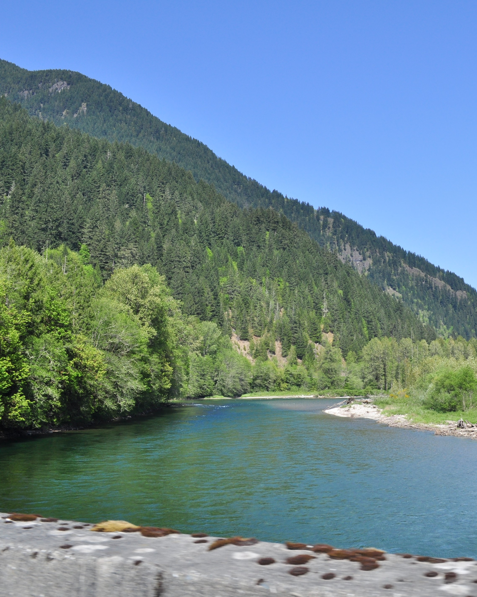

¡Sumérgete en una emocionante jornada de pesca en el río Skagit y
descubre la riqueza de sus aguas cristalinas! Ubicado en el estado
de Washington, el río Skagit es conocido por ser un paraíso para los
amantes de la pesca, ofreciendo una amplia variedad de especies de
peces y paisajes naturales impresionantes.
Para disfrutar al máximo de tu experiencia de pesca en el río Skagit,
es esencial venir bien preparado. Asegúrate de llevar contigo todo el
equipo necesario, incluyendo cañas de pescar, carretes, líneas y señuelos
adecuados para las especies que deseas capturar. No te olvides de
obtener una licencia de pesca válida antes de comenzar tu aventura.
Viste ropa cómoda y que te proteja del sol y el viento, así como calzado adecuado para caminar por
terrenos rocosos y húmedos. Una mochila con agua, bocadillos y protección solar te ayudará a
mantenerte hidratado y energizado durante tu jornada de pesca en el río.

Antes de comenzar tu aventura, investiga las regulaciones de pesca
locales y los mejores lugares para pescar en el río Skagit. Considera
contratar a un guía de pesca local para obtener consejos y
recomendaciones sobre las mejores técnicas y áreas para pescar en el río.
El río Skagit alberga una variedad de especies de peces, incluyendo
salmón, trucha y steelhead, entre otros. Tendrás la oportunidad de pescar
en aguas tranquilas y rápidas, rodeado de hermosos paisajes naturales
y vida silvestre.
Ya sea que estés buscando atrapar una trucha arco iris para una
emocionante cena al aire libre o luchar contra un salmón plateado en una
batalla épica en el río, la pesca en el río Skagit te ofrece una experiencia
única en la vida que nunca olvidarás.


 Jorge Sanchez Rodriguez
Jorge Sanchez Rodriguez